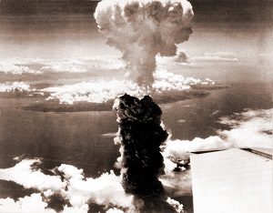
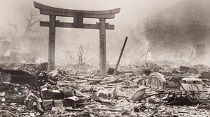

INFORMACION DEL ATAQUE EN HIROSHIMA Y NAGASAKI

El 6 y el 9 de agosto de 1945, durante la Segunda Guerra Mundial, Estados Unidos lanzó las dos únicas bombas nucleares empleadas en una guerra: Little Boy sobre Hiroshima y Fat Man sobre Nagasaki. Ambas ciudades fueron seleccionadas por su valor estratégico como centros industriales, militares y de comunicaciones. Estos hechos marcaron un antes y un después en la historia, al introducir una capacidad de destrucción nunca antes vista.
Hiroshima era un importante puerto y sede de cuarteles militares, mientras que Nagasaki destacaba por su actividad siderúrgica y naval. Las bombas fueron lanzadas desde aviones B-29 y explotaron a cierta altura para maximizar su alcance destructivo. El suceso puso fin oficialmente a la contienda en Asia y abrió una nueva era en la tecnología, la política y las relaciones internacionales.

La decisión de usar estas armas se debió principalmente a la intención de acelerar la rendición de Japón y evitar una invasión terrestre que se estimaba causaría cientos de miles de bajas en ambos bandos. También influyó la negativa inicial del gobierno japonés a aceptar la rendición incondicional exigida por los Aliados. Además, existía el interés de demostrar la capacidad militar de Estados Unidos ante la Unión Soviética, en un momento en que ya comenzaban a surgir tensiones entre ambas potencias.
De forma inmediata, murieron entre 110.000 y 150.000 personas en total, y muchas más sufrieron quemaduras graves y daños por la radiación. Las ciudades quedaron destruidas casi por completo. A largo plazo, aumentaron notablemente los casos de cáncer, leucemia y malformaciones en generaciones posteriores. También inició la carrera armamentista nuclear, impulsó tratados internacionales para controlar estas armas y generó un debate mundial sobre el uso de la energía nuclear con fines bélicos.

De forma inmediata, murieron entre 110.000 y 150.000 personas en total, y muchas más sufrieron quemaduras graves y daños por la radiación. Las ciudades quedaron destruidas casi por completo. A largo plazo, aumentaron notablemente los casos de cáncer, leucemia y malformaciones en generaciones posteriores. También inició la carrera armamentista nuclear, impulsó tratados internacionales para controlar estas armas y generó un debate mundial sobre el uso de la energía nuclear con fines bélicos.
El país ya había perdido gran parte de sus conquistas en Asia y el Pacífico, y su flota aérea y naval quedaba reducida. Se preparaba para enfrentar una invasión aliada prevista para finales de 1945, movilizando incluso a civiles con armas rudimentarias. La población vivía bajo estrictas medidas de austeridad y el miedo constante a los ataques aéreos, sin visión clara de cuándo podría terminar la guerra.
Desde la perspectiva interna, la prolongación del conflicto se debió a la negativa del alto mando japonés a aceptar la rendición incondicional exigida por los Aliados, ya que temían perder la soberanía, la estructura política y el estatus del Emperador. También influyó la creencia de que podían infligir suficientes bajas al enemigo para negociar condiciones más favorables, así como el orgullo nacional y militar que impedía aceptar la derrota rápidamente.
La resistencia llevada al límite provocó una devastación masiva en todo el país: millones de personas quedaron sin hogar, hubo hambrunas y un colapso casi total de los servicios básicos. Tras la rendición, Japón fue ocupado por fuerzas extranjeras, se reorganizó su sistema político, se prohibió el ejército y comenzó un largo proceso de reconstrucción económica y social que transformó profundamente su identidad, su relación con el mundo y su forma de participar en la política internacional.